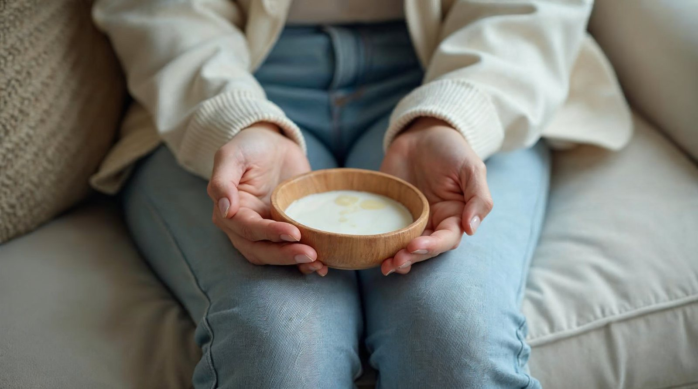
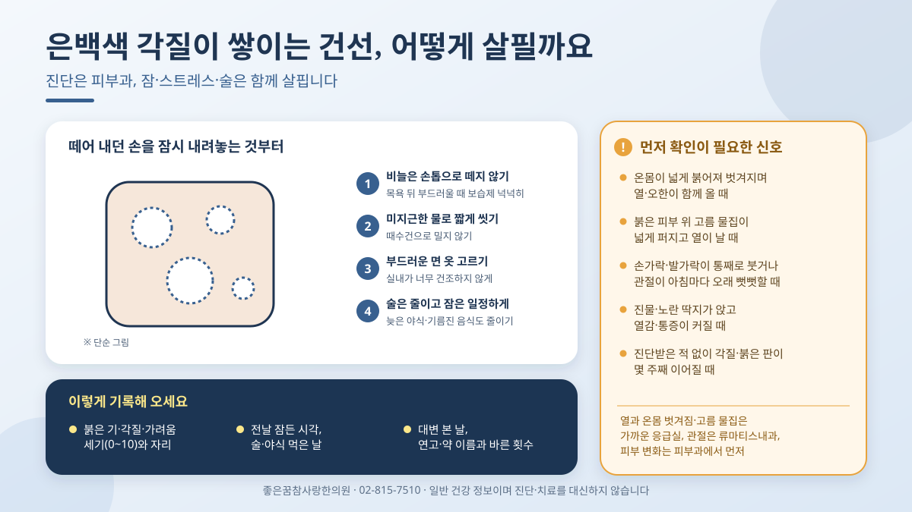

이종호 한의사 감수좋은꿈참사랑한의원 대표원장 (한의사 면허번호 19769)발행 2026-11-26 · 수정 2026-11-26
이 글의 차례
검은 니트를 벗어 털다가 어깨에 하얀 가루가 내려앉은 것을 봅니다. 팔꿈치는 늘 꺼끌꺼끌하고, 무릎에는 동전보다 큰 붉은 자리가 몇 해째 자리를 잡고 있습니다. 여름에도 반팔을 고르기 전에 한 번 더 망설이게 됩니다.
두피와 팔꿈치, 무릎처럼 자주 닿고 접히는 바깥쪽에 경계가 또렷한 붉은 판이 생기고, 그 위로 은백색 각질이 겹겹이 쌓인다면 건선일 수 있습니다. 진단은 피부과에서 받는 것이 기준이고, 저는 그 진단과 치료를 그대로 두고 잠과 스트레스, 술, 소화와 대변을 함께 여쭙습니다.
먼저 짚어 둘 것이 있습니다. 손가락이나 발가락 마디가 붓고 아침마다 뻣뻣하다면, 피부와 함께 관절도 확인이 필요합니다. 온몸이 넓게 붉어지며 껍질이 벗겨지고 열과 오한이 함께 오면 한의원을 기다리지 말고 바로 가까운 응급실로 가셔야 합니다.
진료실에서 이런 말씀을 자주 듣습니다. 옮는 병이 아니라는 걸 알면서도 목욕탕이나 수영장에 가기가 망설여진다고요. 미용실에서 두피를 보이는 일, 악수할 때 손톱을 보이는 일까지 하나하나 신경이 쓰인다는 분도 계십니다.
건선은 오래 함께 지내는 피부 질환이라 잠잠했다가 다시 올라오기를 되풀이하는 경우가 많습니다. 연고를 바르고, 가루를 털고, 옷 색을 고르며 버텨 온 시간이 얼마나 길었을까 싶습니다. 저는 그 시간부터 천천히 듣고 싶습니다.
왜 같은 자리에 각질이 자꾸 쌓일까요
우리 피부는 바깥 껍질이 조용히 떨어지고 그 아래에서 새 세포가 올라오기를 되풀이합니다. 보통은 한 달 가까이 걸리는 이 흐름이, 건선에서는 면역 반응이 과하게 켜지면서 며칠 만에 서둘러 돌아간다고 알려져 있습니다.
다 자라지 못한 세포가 미처 떨어지지 못하고 겹겹이 쌓이니, 붉은 바탕 위에 은백색 비늘이 두껍게 얹힙니다. 긁으면 하얀 가루가 떨어지고, 비늘을 억지로 떼면 그 아래에서 작은 핏점이 맺히기도 합니다.
건선은 옮는 병이 아닙니다. 피부의 염증이지만 몸 전체의 면역과 이어져 있는 만성 질환으로 이해되고 있습니다. 그래서 피부만 보지 말고 관절과 손발톱, 혈압·혈당·체중 같은 몸 전체의 건강도 함께 챙기시라고 권해 드립니다.
긁히거나 다친 자리, 옷이 자꾸 쓸리는 자리에 새로 건선이 생기는 경우가 있습니다. 팔꿈치와 무릎이 잘 생기는 자리인 것도 그만큼 자주 닿고 부딪히기 때문이라고 보는 시각이 있습니다. 그래서 손톱으로 떼어 내는 습관부터 살핍니다.
한의학에서는 피부를 몸의 겉에 드러난 거울처럼 봅니다. 몸 안에 열이 쌓이거나, 잠이 깨지거나, 마음이 오래 긴장한 시기에 겉이 먼저 반응한다고 여기지요. 저는 이 생각을 피부과 진단을 대신하는 것이 아니라, 생활을 함께 살피는 길잡이로 씁니다.
잠·스트레스·술, 그리고 계절
건선이 올라오는 시기를 거슬러 올라가 보면 겹치는 장면이 있습니다. 큰일을 앞두고 몇 주 동안 잠을 줄인 때, 연말 모임으로 술자리가 이어진 때, 목감기를 크게 앓고 난 뒤, 그리고 공기가 바짝 마르는 겨울입니다.
스트레스는 건선을 악화시키는 요인으로 잘 알려져 있습니다. 마음이 쫓기면 잠이 얕아지고, 잠이 얕으면 밤에 더 긁게 됩니다. 긁은 자리에 다시 건선이 생기니 꼬리를 무는 셈입니다.
걱정이 많아 잠이 늦어진다면 걱정이 많아서 잠이 안 올 때는 어떻게 살피나요?도 함께 보셔도 좋습니다.
술과 담배도 건선과 함께 자주 이야기됩니다. 술을 마신 다음 날 붉은 기가 더 올라오는지, 술자리가 이어진 주에 각질이 두꺼워졌는지 적어 보시면 생활에서 손댈 곳이 보입니다. 술이 잠을 얕게 만드는 이야기는 저녁 식사와 술은 잠에 어떤 영향을 주나요?에 정리해 두었습니다.
겨울에는 난방으로 공기가 마르고 햇볕을 쬐는 시간이 줄어 건선이 심해진다는 분이 많습니다. 반대로 여름에 한결 편하다는 분도 계시지요. 건조한 계절의 피부 관리는 겨울이면 정강이가 하얗게 일어나고 밤에 가려울 때는 어떻게 살피나요?에서 더 보실 수 있습니다.
먹는 것과 속은 어떻게 볼까요
건선을 낫게 하는 특별한 음식이 있느냐는 질문을 자주 받습니다. 저는 무엇을 더 먹을지보다 무엇이 지나쳤는지를 먼저 봅니다. 늦은 밤 기름진 안주, 며칠씩 막힌 대변, 배가 부른 채로 눕는 습관 같은 것들입니다.
한의학에서는 피부가 자주 올라오는 분께 조금 덜 먹고 채소를 넉넉히 두는 식사를 권하는 경우가 많습니다. 들어오는 양과 비우는 양이 맞아야 속이 편하다고 보기 때문입니다. 대변이 며칠씩 막힌다면 물과 채소, 걷기부터 챙겨 보세요.
체중이 늘면 건선이 함께 무거워진다는 분도 계십니다. 건선이 있는 분은 혈압과 혈당, 콜레스테롤도 정기 검진으로 챙겨 두시길 권합니다. 피부 하나만이 아니라 몸 전체를 오래 함께 돌본다는 마음이면 충분합니다.
두피 건선은 이렇게 돌봅니다
두피는 건선이 가장 잘 생기는 자리 가운데 하나입니다. 머리카락에 가려 바르는 약이 잘 닿지 않고, 감을 때마다 손톱으로 긁게 되어 더 힘들어하시는 분이 많습니다.
감을 때는 손톱 대신 손가락 끝으로 두피를 부드럽게 문지르고, 두꺼운 각질은 억지로 떼지 마세요. 뜨거운 바람으로 오래 말리기보다 미지근한 바람으로 두피부터 말립니다. 두피에 바르는 약이나 샴푸는 피부과에서 안내받은 방법을 따르는 것이 좋습니다.
비슷해 보이는 다른 피부와 나눠 보기
하얀 각질과 붉은 기가 보인다고 다 건선은 아닙니다. 아래는 진료실에서 흔히 헷갈리는 경우를 나눠 본 것입니다. 최종 진단은 피부과에서 받으시는 것이 기준입니다.
- 지루피부염: 두피와 눈썹, 코 옆에 노르스름하고 기름진 비듬이 생기며 경계가 덜 또렷한 편입니다.
- 습진·아토피피부염: 팔 안쪽, 무릎 뒤처럼 접히는 곳에 잘 생기고 가려움이 앞서며 경계가 흐릿한 경우가 많습니다.
- 무좀(곰팡이 감염): 발가락 사이, 발바닥, 손발톱에 생기고 한쪽에만 생기기도 합니다. 피부과에서 곰팡이 검사로 나눕니다.
- 동전 모양 습진: 동그란 판이 생기지만 진물과 딱지가 앉는 경우가 많습니다.
건선은 대개 양쪽에 비슷하게, 경계가 칼로 그은 듯 또렷하게 생기는 편입니다. 손발톱에 바늘로 찍은 듯한 작은 패임이 생기거나 끝이 들뜨는 변화가 함께 보이면 건선 쪽에 무게를 두고 피부과에 말씀해 보세요.
손발톱도 함께 봐 주세요
건선은 손발톱에도 흔적을 남기곤 합니다. 손톱 표면에 바늘로 콕콕 찍은 듯한 작은 패임, 끝이 하얗게 들뜨는 변화, 손톱 아래가 기름을 떨어뜨린 듯 누렇게 비치는 모습이 대표적입니다.
손발톱 변화는 무좀과 겉모습이 비슷해 혼자 판단하기 어렵습니다. 들뜬 손톱을 깎아 내거나 뜯지 말고, 피부과에서 함께 봐 달라고 말씀해 보세요. 손발톱 변화가 있는 분은 관절 증상도 한 번 더 살펴보시길 권합니다.
관절이 아프다면 따로 말씀해 주세요
건선이 있는 분 가운데 일부는 관절에도 염증이 생깁니다. 손가락 끝마디가 붓고 아프거나, 손가락 하나가 통째로 소시지처럼 붓거나, 아침에 일어나 손이 뻣뻣해 한참 주물러야 풀리는 경우입니다.
발뒤꿈치나 아킬레스힘줄 자리가 아프고 허리가 아침마다 굳는 분도 계십니다. 이런 관절 증상은 그냥 피곤해서, 나이가 들어서 그렇겠거니 넘기기 쉽습니다. 건선이 있다면 피부과와 함께 류마티스내과 확인을 권해 드립니다.
먼저 이렇게 여쭙니다
처음부터 정확하게 설명하지 못하셔도 괜찮습니다. 아래 질문을 떠올려 오시면 이야기가 한결 쉽게 풀립니다.
- 처음 생긴 때는 언제이고, 피부과에서 건선 진단을 받으셨나요? 지금 쓰는 연고와 약 이름은 무엇인가요?
- 두피·팔꿈치·무릎 말고 생긴 자리가 있나요? 손발톱 변화는 있나요?
- 손가락·발가락 마디나 발뒤꿈치가 붓거나 아침에 뻣뻣한 날이 있나요?
- 심해지기 전에 잠이 줄었거나, 마음 쓰이는 일이 있었거나, 술자리나 감기가 있었나요?
- 대변은 며칠에 한 번 보시나요? 못 본 날 가려움과 붉은 기가 더 올라오나요?
- 더위와 추위 가운데 어느 쪽이 더 힘드신가요? 땀은 어떤가요?

일상에서 먼저 해 볼 수 있는 것
진맥 실습 때 잘 모르겠으면 손을 한번 떼 보라는 말을 들은 적이 있습니다. 피부도 비슷해서, 자꾸 만지고 떼어 내던 손을 잠시 내려놓는 것부터가 시작입니다.
- 비늘은 손톱으로 떼지 않고, 목욕 뒤 부드러워졌을 때 보습제를 넉넉히 발라 두기
- 미지근한 물로 짧게 씻고, 때수건으로 밀지 않기
- 샤워 뒤 3분 안에 물기를 눌러 닦고 보습제 바르기
- 실내가 너무 건조하지 않게 하고, 피부에 닿는 옷은 부드러운 면으로 고르기
- 술은 줄이고, 담배는 끊는 쪽으로 계획 세우기
- 잠드는 시각을 일정하게 두고, 밤 늦은 야식과 기름진 음식은 줄여 보기
햇볕이 건선에 도움이 되는 경우가 있다고 알려져 있지만, 오래 쬐어 피부가 타면 그 자리에 오히려 건선이 생길 수 있습니다. 광선 치료는 피부과에서 정한 방법대로 받으시고, 집에서 일부러 오래 햇볕을 쬐는 일은 피하세요.
한꺼번에 다 바꾸려 하면 오래가기 어렵습니다. 저는 보습 하나, 잠드는 시각 하나부터 몸에 붙여 보시라고 말씀드립니다. 못 지킨 날은 다음 날 다시 하면 됩니다.
예를 들면 이런 경우입니다
실제 어느 분의 사연이 아니라, 진료실에서 자주 보는 모습을 바탕으로 그려 본 장면입니다.
예를 들어 연말 결산으로 몇 주째 야근을 하며 저녁마다 술자리가 겹친 직장인이라면, 두피 각질이 늘고 팔꿈치가 붉어진 시기와 잠이 줄어든 시기가 겹치는지 먼저 봅니다. 연고는 그대로 쓰시면서 잠드는 시각과 술 마신 날을 함께 적어 오시도록 권합니다.
예를 들어 손가락 마디가 아침마다 뻣뻣한데 그저 손을 많이 써서 그렇다고 여겨 온 경우도 있습니다. 이럴 때는 피부 이야기보다 먼저 류마티스내과 확인을 안내합니다. 관절 염증은 놓치지 않는 것이 중요하기 때문입니다.
예를 들어 수험 기간에 밤늦게 공부하며 두피를 자꾸 긁게 된 학생이라면, 책상 앞에서 머리를 만지는 습관과 잠드는 시각을 먼저 함께 봅니다. 두피에 바르는 약은 피부과에서 받은 방법대로 이어 가시도록 하고, 손톱을 짧게 깎아 두시라고 말씀드립니다.
한의원에서 함께 살필 수 있는 경우
- 피부과 진단과 치료를 받으면서 잠·소화·대변·체온 같은 몸 전체의 리듬도 함께 살피고 싶은 경우
- 스트레스나 술, 잠 부족이 겹칠 때마다 다시 올라오는 경우
- 가려움 때문에 잠을 자주 깨거나, 피곤과 열감이 함께 있는 경우
좋은꿈참사랑한의원에 처음 오시면 진맥부터 합니다. 저는 처음 오신 분이든 다시 오신 분이든 모든 분께 맥을 짚습니다. 맥을 짚는 동안 잠과 소화, 대변, 땀과 체온, 요즘 마음 쓰이는 일을 여쭙고, 필요하다고 판단될 때 혀도 봅니다.
이어서 피부과에서 받은 진단과 쓰는 연고·약을 확인하고, 피부가 생긴 자리와 손발톱, 관절을 함께 봅니다. 아래에 적은 신호가 있으면 피부과나 류마티스내과 확인이 먼저라고 말씀드리고 그 이유도 설명드립니다.
그다음 지금 상태에 맞는 침, 한약 상담 가운데 무엇을 할지 함께 정합니다. 치료 중에는 "괜찮으세요?" 하고 여쭙고, 몸이 편하게 받아들이면 이어 가고 불편하면 멈춥니다. 다시 오시면 지난번 이후 잠과 술, 대변이 어땠는지부터 이어서 여쭙습니다.
이렇게 기록해 오시면 상담이 쉬워집니다
건선은 진료실에 오는 날 마침 잠잠한 경우가 많습니다. 그래서 기억보다 기록이 힘이 됩니다. 2~4주만 한 줄씩 적어 보세요.
- 붉은 기와 각질, 가려움의 세기(0~10)와 생긴 자리
- 전날 잠든 시각과 깬 횟수
- 술 마신 날, 기름진 음식이나 야식을 먹은 날
- 대변을 본 날과 못 본 날
- 마음 쓰이는 일이 많았던 날, 감기나 목 아픔이 있던 날
- 쓰고 있는 연고와 약 이름, 바른 횟수
심한 날 찍어 둔 사진이 있으면 진료실에서 상태를 설명하는 데 도움이 됩니다. 빠진 날이 있어도 괜찮습니다. 기억나는 만큼만 적어 오시면 나머지는 제가 여쭙겠습니다.
가려움이 낮과 밤 중 언제 심한지 적는 법은 가려움이 낮에 심한지 밤에 심한지는 왜 묻고, 어떻게 적어 두나요?에 정리해 두었습니다.
이런 증상은 먼저 확인이 필요합니다
- 온몸이 넓게 붉어지며 껍질이 벗겨지고, 열·오한이 함께 오는 경우
- 붉은 피부 위에 작은 고름 물집이 넓게 퍼지고 열이 나는 경우
이런 신호가 있으면 한의원보다 가까운 병원이나 응급실을 먼저 찾으세요.
옷 색을 고르고, 사람들 앞에서 팔을 거두며 지내 오신 시간이 있을 겁니다. 피부만 보지 않고 그 시간 동안 흔들린 잠과 마음, 속까지 함께 살펴보겠습니다. 다음에 오시면 지난 두 주 동안 잠든 시각과 술 마신 날이 어땠는지부터 여쭙겠습니다.

여쭙는 것
- 처음 생긴 때는 언제이고, 피부과에서 건선 진단을 받으셨나요? 지금 쓰는 연고와 약…
- 두피·팔꿈치·무릎 말고 생긴 자리가 있나요? 손발톱 변화는 있나요?
- 손가락·발가락 마디나 발뒤꿈치가 붓거나 아침에 뻣뻣한 날이 있나요?
생활에서 해 볼 것
- 비늘은 손톱으로 떼지 않고, 목욕 뒤 부드러워졌을 때 보습제를 넉넉히 발라 두기
- 미지근한 물로 짧게 씻고, 때수건으로 밀지 않기
- 샤워 뒤 3분 안에 물기를 눌러 닦고 보습제 바르기
한의원에서 함께 살필 것
- 피부과 진단과 치료를 받으면서 잠·소화·대변·체온 같은 몸 전체의 리듬도 함께 살피…
- 스트레스나 술, 잠 부족이 겹칠 때마다 다시 올라오는 경우
- 가려움 때문에 잠을 자주 깨거나, 피곤과 열감이 함께 있는 경우
먼저 확인이 필요한 신호
- 온몸이 넓게 붉어지며 껍질이 벗겨지고, 열·오한이 함께 오는 경우
- 붉은 피부 위에 작은 고름 물집이 넓게 퍼지고 열이 나는 경우
한눈에 보는 표
| 구분 | 핵심 |
|---|---|
| 여쭙는 것 | 처음 생긴 때는 언제이고, 피부과에서 건선 진단을 받으셨나요? 지금 쓰는 연고와 약 이름은 무엇인가요? 두피·팔꿈치·무릎 말고 생긴 자리가 있나요? 손발톱 변화는 있나요? |
| 생활에서 해 볼 것 | 비늘은 손톱으로 떼지 않고, 목욕 뒤 부드러워졌을 때 보습제를 넉넉히 발라 두기 미지근한 물로 짧게 씻고, 때수건으로 밀지 않기 |
| 한의원에서 함께 살필 것 | 피부과 진단과 치료를 받으면서 잠·소화·대변·체온 같은 몸 전체의 리듬도 함께 살피고 싶은 경우 스트레스나 술, 잠 부족이 겹칠 때마다 다시 올라오는 경우 |
| 먼저 확인이 필요한 신호 | 온몸이 넓게 붉어지며 껍질이 벗겨지고, 열·오한이 함께 오는 경우 붉은 피부 위에 작은 고름 물집이 넓게 퍼지고 열이 나는 경우 |
자주 묻는 질문
건선은 다른 사람에게 옮나요?
옮지 않습니다. 면역 반응과 이어진 만성 피부 질환으로 알려져 있어 함께 지내는 가족이나 목욕탕에서 옮는 병이 아닙니다.
스테로이드 연고를 계속 써도 되나요? 끊고 싶어요.
혼자 갑자기 끊거나 줄이지 마세요. 바르는 양과 기간은 처방한 의사와 상의해 정하는 것이 안전합니다. 쓰는 연고 이름을 알려 주시면 한의원 진료 때도 함께 확인합니다.
한의원 진료를 피부과 치료와 함께 받아도 되나요?
피부과 진단과 치료를 기준으로 두고, 쓰는 약을 모두 알려 주시면 잠·소화·대변·체온 같은 몸 전체의 리듬을 함께 살피는 방식으로 진료합니다.
무릎과 손가락 관절이 아픈데 건선과 관계가 있나요?
건선이 있는 분 일부에서 관절 염증이 함께 생길 수 있습니다. 관절이 붓거나 아침마다 오래 뻣뻣하다면 류마티스내과 확인을 먼저 권합니다.
좋은꿈참사랑한의원은 재진 때 지난번 이야기부터 이어서 여쭙니다. 진료시간과 예약은 오시는 길에서 확인하세요.
어디서 상담받을 수 있나요?
좋은꿈참사랑한의원은 서울 동작구 만양로2길 2 신성빌딩 3층·5층(서울 동작구 상도동, 7호선 상도역 3번 출구 근처)에 있습니다. 한의사 3명(이종호 대표원장, 조영기 수석진료원장, 정원영 진료원장)이 진료합니다. 진료시간은 평일 09:30~20:00(점심 13:00~14:00), 토·일·공휴일 09:30~15:00이며, 방문 전 전화로 확인을 권합니다. 예약은 네이버 예약, 카카오톡 상담, 전화 02-815-7510로 받습니다.
이 글은 일반적인 건강 정보이며 개인의 진단이나 치료를 대신하지 않습니다. 증상이 있거나 복용 중인 약이 있다면 진료를 통해 확인하세요. 치료 효과는 개인마다 다를 수 있습니다.
작성 기준: 일반적으로 알려져 있는 건강 정보를 참고해 정리했습니다(대표원장 감수). 증상 기록은 1~2주 동안 하루 1회, 비슷한 시간에 적어 오시면 지난 상태와 비교하기 쉽습니다.